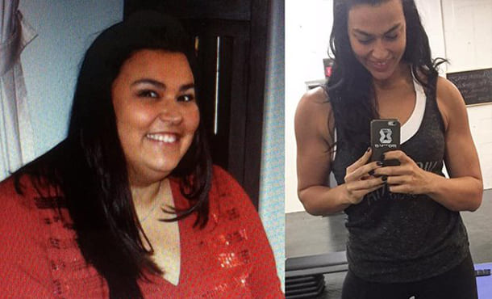
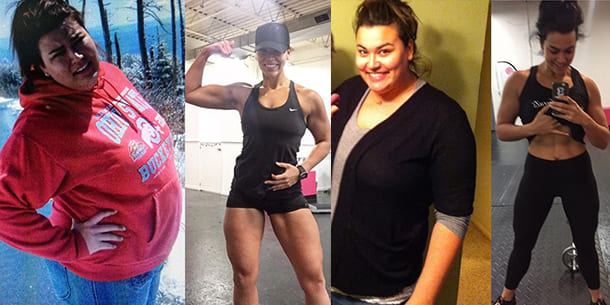
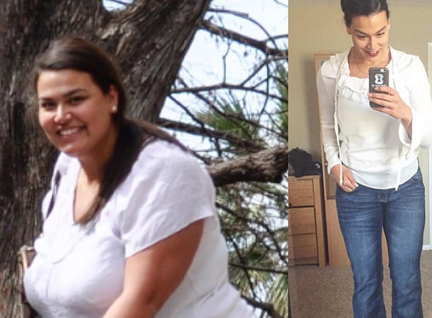
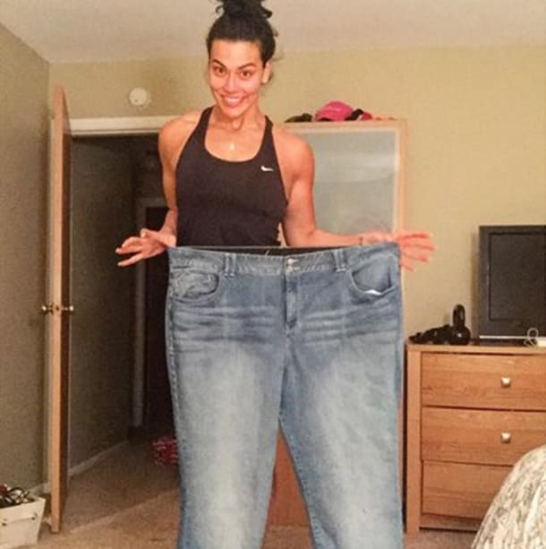

ΠΩΣ ΝΑ ΧΑΣΕΙΣ ΒΑΡΟΣ (43 ΚΙΛΑ ΣΤΗΝ ΠΕΡΙΠΤΩΣΗ ΜΟΥ) ΚΑΙ ΝΑ ΕΧΕΙΣ ΞΑΝΑ ΜΙΑ ΓΕΜΑΤΗ ΖΩΗ. Η ΝΕΑ ΜΟΥ ΖΩΗ ΞΕΚΙΝΗΣΕ ΣΤΑ 33!
Γεια σας, εγώ είμαι, η συντάκτρια αυτού του blog, τώρα και 5 μήνες πριν. Δείτε τους χαριτωμένους γλουτούς μου J
Αποφάσισα να μοιραστώ την ιστορία μου για το πώς εγώ (πρώην παχιά) τώρα ζυγίζω 57 κιλά.
Ήμουν αρκετά αδύνατη, αλλά όλα άλλαξαν όταν παντρεύτηκα. Εγώ και ο σύζυγός μου καθόμασταν και παρακολουθούσαμε τηλεόραση με σάντουιτς, μπύρες και πατατάκια και στη συνέχεια ακολουθούσε και ένα γλυκό. Πολλοί από εσάς ξέρουν γιατί μιλάω. Παντρεύτηκα και σταμάτησα να ανησυχώ. Έχω τη βέρα τώρα, γιατί να προσπαθώ σκληρά; Πήρα κάποια κιλά; Η ζυγαριά έδειχνε 80 κιλών. Δεν πειράζει! Ο σύζυγός μου με αγαπάει όπως και να είμαι.
Συνέχιζα να παίρνω κιλά. Ήμουν πια πάνω από 100 κιλά.
Σταδιακά είχα μετατραπεί σε γουρούνι. Δεν έχω κανένα πρόβλημα να το παραδεχτώ. Αντί για δυο πηγούνια, είχα τέσσερα. Θα μπορούσα να κρύψω χρήματα στις πτυχές της κοιλιάς μου, ορκίζομαι ότι κανείς δεν θα τα έβρισκε αν με έψαχνε. Το πλαδαρό σώμα μου έτρεμε με την παραμικρή κίνηση, και κάθε κίνηση με έκανε να λαχανιάζω. Χρησιμοποιούσα το ασανσέρ για να πάω στον δεύτερο όροφο επειδή φοβόμουν μην πνιγώ.
Αποφασίσαμε να κάνουμε ένα μωρό, αλλά ήταν πιο εύκολο να το πούμε παρά να το κάνουμε. Μας είπαν στην κλινική ότι έπρεπε να χάσω βάρος και με έβαλαν σε μια αυστηρή δίαιτα. Ο σύζυγός μου με στήριξε, δεν υπήρχε «απαγορευμένη» τροφή στο σπίτι. Έχασα 17 κιλά, όλοι έλεγαν ότι ήμουν καταπληκτική, εφησύχασα και όλα επέστρεψαν στο όπως ήταν πριν. MMM ΦΑΓΗΤΟ, ΤΩΡΑ ΜΠΟΡΩ ΝΑ ΦΑΩ. Πήρα ξανά βάρος και μάλιστα ακόμα περισσότερο από ό, τι πριν.
Στα 30 μου, είχα σοβαρά προβλήματα υγείας, χοληστερόλη, αρτηριακή πίεση, καρδιακά προβλήματα και προβλήματα στο πάγκρεας, διαβήτη τύπου 2 ακόμη και ψωρίαση. Όλα εξαιτίας του πάχους μου. Ήμουν απόλυτα απαθής και καταθλιπτική.
Η σχέση μου δεν πήγαινε καλά. Δεν είχα κάνει σεξ με το σύζυγό μου για μήνες, στην αρχή με στήριζε, αλλά στη συνέχεια σχεδόν σταματήσαμε να μιλάμε. Αυτό ήταν που με έκανε να συνειδητοποιήσω ΟΤΙ ΑΥΤΟ ΕΠΡΕΠΕ ΝΑ ΣΤΑΜΑΤΗΣΕΙ!
Δεν σκεφτόμουν καν δίαιτες ή γυμναστήριο, και τα δυο απαιτούσαν χρόνο και ισχυρή βούληση, που δεν είχα. Έπρεπε να ενεργήσω γρήγορα για να σώσω τον γάμο μου. Έψαξα στο Διαδίκτυο και μάλιστα συμβουλεύτηκα online και μια διατροφολόγο. Περιέγραψα την κατάστασή μου και της είπα ότι χρειάζομαι ένα γρήγορο και μόνιμο αποτέλεσμα. Η γιατρός μου πρότεινε το .
Εύχομαι να γνώριζα γι’ αυτό νωρίτερα. Το είναι αναβράζοντα δισκία που υποστηρίζουν το σώμα κατά τη διάρκεια της κέτωσης (όταν τα κύτταρα του σώματος σταματούν να λαμβάνουν επαρκείς ποσότητες υδατανθράκων). Τα ενεργά συστατικά του να μειώνουν την κόπωση, να εξαλείφουν την απάθεια, να αποτρέψουν την «κετοναγκίνη» και να αντισταθμίσουν την έλλειψη καλών θρεπτικών ουσιών . Με το Keto Gutu μπορείτε να συνεχίσετε να τρώτε τροφές που περιέχουν υδατάνθρακες, το πιο σημαντικό βέβαια είναι να το κάνετε αυτό με μέτρο. Ο ενεργός τύπος που περιέχεται στο προϊόν επιταχύνει τη διαδικασία καύσης λίπους κατά 2-3 φορές χωρίς να επηρεάσει αρνητικά το σώμα σας.
Έκανα μετρήσεις και έμεινα έκπληκτη όταν είδα ότι έχανα σχεδόν 2,5 εκατοστά σε μέγεθος κάθε εβδομάδα.
Σε ένα μήνα έχασα 13 κιλά. Δεν έκανα απολύτως τίποτα! Το ορκίζομαι. Απλά έπαιρνα το και διατηρούνται τις συνηθισμένες διατροφικές μου συνήθειες: κρέας, ζυμαρικά, ψάρι, ακόμη και κέικ. Αλλά οι μερίδες ήταν πολύ μικρότερες. Είχα αισιοδοξία, ήμουν ενθουσιασμένη, και παράγγειλα κι άλλο.
Δεν θα σας κουράσω άλλο με την ιστορία μου, απλά ρίξτε ακόμα μια ματιά στη φωτογραφία μου.
Σε 5 μήνες συνολικά το με βοήθησε να χάσω 43 κιλά. Κοιτάω τις παλιές μου φωτογραφίες και δεν θέλω να ξαναγίνω έτσι. Τώρα είμαι μια υγιής γυναίκα και νιώθω υπέροχα. Έχω ένα χαμόγελο ευτυχίας, εγώ και ο σύζυγός μου καταλαβαίνουμε ο ένας τον άλλο, και είμαστε ερωτευμένοι. Δόξα τω Θεώ οι δύσκολες μέρες τελείωσαν Μετά την απώλεια βάρους, άρχισα να ανακτώ έναν ενεργό τρόπο ζωής. Δεν τρώμε πλέον μέχρι σκασμού μπροστά από την τηλεόραση, αλλά έχουμε δραστήρια Σαββατοκύριακα.
Υ.Γ. Είμαι περισσότερο από ευτυχής με το αποτέλεσμα μου και πιστεύω ότι μπορείτε να έχετε και εσείς κάτι αντίστοιχο! Είδα στα σχόλια ότι πολλοί από εσάς ενδιαφέρεστε να χάσετε βάρος, έτσι μοιράστηκα την εμπειρία μου. Αν έχετε πρόβλημα να χάσετε βάρος με τον παραδοσιακό τρόπο όπως και εγώ μπορείτε να παραγγείλετε το εδώ . Είμαι βέβαιη ότι θα δώσει και σε εσάς μια νέα ζωή
Σχόλια: